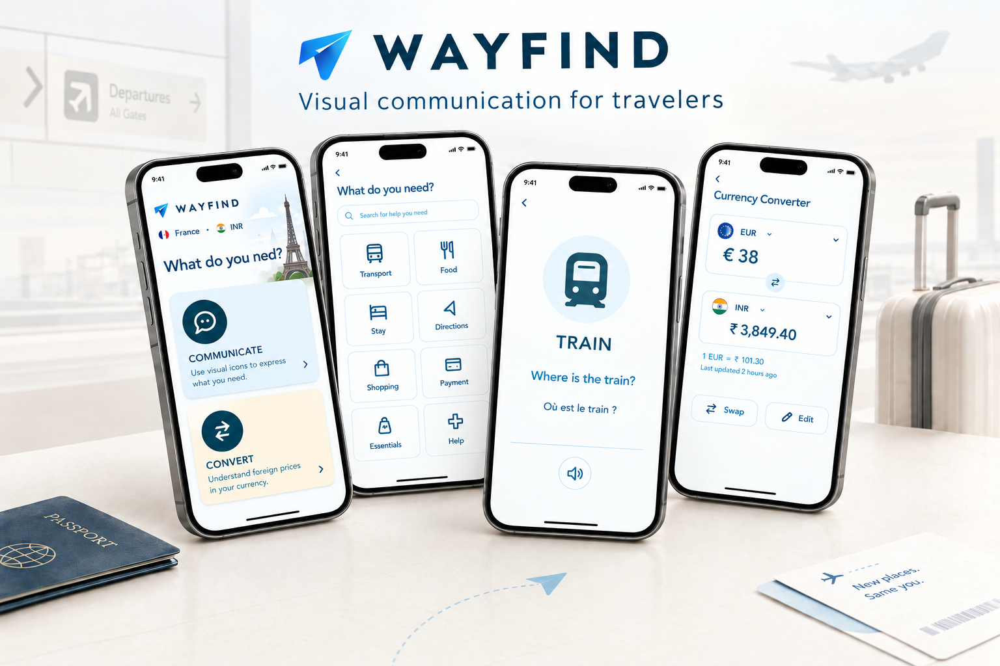
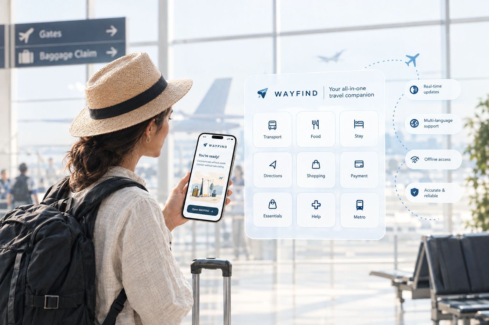

What if you could communicate without speaking the same language?

You know what you need.
You just don't know how to ask.
Travel doesn't always become difficult because the information is complicated.
Sometimes the problem is much smaller.
You know where you need to go. You know what you need. You just don't share the language of the person in front of you.
Intent can be understood without translating everything.
A traveler doesn't necessarily need to translate an entire conversation.
Sometimes they only need to communicate one simple intention.
Can visual language become a bridge between two people?

Two things.
Not everything.
COMMUNICATE
Express a simple intention using visual prompts designed to be shown directly to another person.
CONVERT
Quickly understand foreign prices in your own currency without turning the experience into a finance application.
Start with intent.
Not language.
Choose
Ask
Show
Respond

Start with what you need.

Turn an intention into something you can show.
Select the situation.
Select the intention.
WAYFIND turns it into a simple visual question that can be shown directly to another person.
The phone becomes the conversation starter.

Asking isn't enough.

The goal is to understand what to do next.
The screen isn't being used at a desk.
What happens when there is no internet?
Available locally.
- Communication categories
- Visual questions
- Icon system
- Predefined response patterns
Needs connectivity.
- Live translation
- GPS
- Dynamic itinerary
- Device-to-device communication
Language isn't the only thing that changes when you travel.
Designed to be understood before it is read.

An idea becomes more useful when you can put it in someone's hands.

Figma / UX Flow

High-Fidelity UI

Android Prototype
Not everything needs to be built.
WAYFIND could eventually become much larger. But adding features doesn't automatically create a better experience. The first version exists to test one question well.
The prototype is only the beginning.
Visual
Context
Voice
Connection
Navigation
Sometimes the smallest problem reveals the bigger experience.
Maybe travel communication isn't
about translating everything.
Maybe it's about making intent
easier to understand.
WAYFIND is an independent product exploration by Design That Evolve. Problem → Thinking → Experience → Interface → Prototype
Start a conversation →